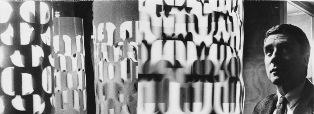

I am inspired by Brion Gysin who, in a filiation with Dada, the Lettristes and the Surrealists, developed the Cut-Ups method for generating texts, images, films... by processing random materials according to specific procedures
Explanations by W.S.Burroughs on Ubuweb
and video :
Permutations
He also worked with a young mathematician, Ian Sommerville. They together produced a compouter program which would generate randomly poems using permutations applied to an initial text
Software was written in 1960 and used to run on a Honeywell Serie 200.
A modern rendering can be seen here : Permutations as programmed by Joseph Moore
Dream Machine
Observing that flicker occasioned by some shadows alternating with light could generate trance like states, Brion Gysin and Ian Sommerville are also the inventors of the infamous Dream Machine, a cheap, safe and DIY way of generating hallucinations.

Brion Gysin was truly a multidimensional artist. His findings and productions do not restrict to this limited page. I strongly recommend exploring deeper.